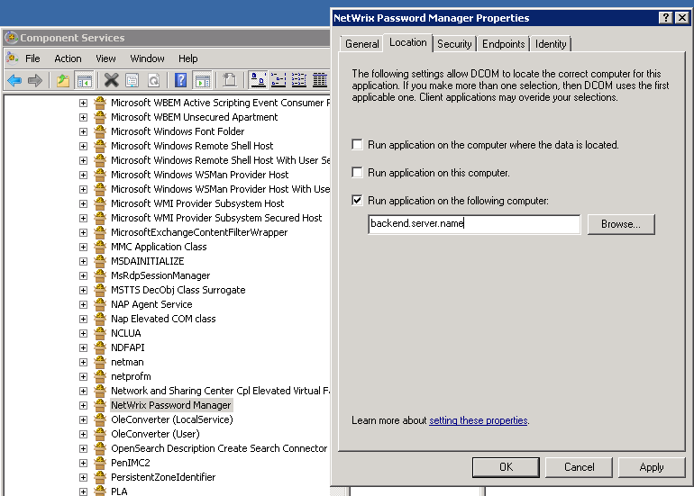

Administrative and Helpdesk portals return the Server.CreateObject failed
 meanwhile Self-Service portal does not work at all
meanwhile Self-Service portal does not work at all

Server.CreateObject failed means that there is no Netwrix Password manager Service registered on the server where the frontend tries to connect to, or the service is not running.
First of all, make sure that DCOM settings on the frontend server are configured properly to point to the backend server as follows:
meanwhile Self-Service portal does not work at all
Server.CreateObject failed means that there is no Netwrix Password manager Service registered on the server where the frontend tries to connect to, or the service is not running.
First of all, make sure that DCOM settings on the frontend server are configured properly to point to the backend server as follows:
- Navigate to Start à Run and execute the dcomcnfg.exe command to run Component Services.
- In the Component Services snap-in navigate to Console Root à Component Services à Computers à My Computer à DCOM Config.
- Right-click Netwrix Password Manager and select Properties.
- Go to the Location tab and disable the Run application on this computer checkbox.
- Then enable the Run application on the following computer option, and enter the Netbios or FQDN name or IP address of the back-end server you have installed.
- Then click OK.
NOTE. Try reapplying the settings if they are in place.

Also please make sure that the Password manager service is running on the backend server.
Refer to the KB1332